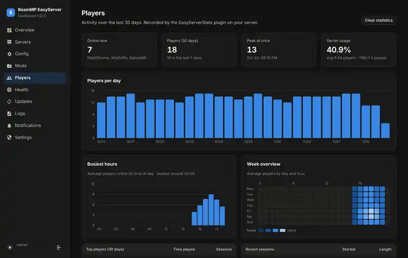
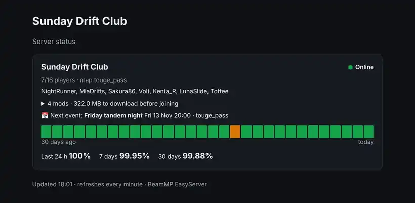

Your own BeamNG.drive multiplayer server, set up in one click
EasyServer installs the official BeamMP server and gives you a dashboard for it on your PC or phone. Add mods, see who's playing and keep trolls out, without config files or a command line. It's free and open source, for Windows and Linux.



Get startedAbout ten minutes, most of it waiting for downloads.
1. Get a free AuthKey
Log in at keymaster.beammp.com with Discord, click Keys, then +, and copy the key. It puts your server in the public BeamMP list.
2. Install
Windows: Download BeamMP-EasyServer-Windows.zip from the latest release, extract it and double-click Install-BeamMP-Server.bat.
Linux: Paste this into a terminal:
curl -fsSL https://raw.githubusercontent.com/Csabika-dev/beammp-easyserver/stable/linux/install.sh | sudo bash
This installs the tested Stable version. For the newest features, see Rolling.
3. Open the dashboard
On the server computer, go to http://localhost:30815 and choose a password. From your phone or another PC at home, use http://<server-ip>:30815.
4. Let friends in
On the Health page, click Open port automatically. Most routers accept it. If yours doesn't, forward port 30814 (TCP and UDP) yourself, and the Health page tells you when it works.
Then click Copy invite and paste it in Discord. Step-by-step guides
Rather watch? The whole setup takes about 2 minutes. Open on YouTube
What it doesMade for people who want to play with friends, not learn server admin. All features

Mods without the worry
Drag mod zips onto the page. Each one is checked for hidden programs, disguised files and zip bombs with Microsoft Defender or ClamAV, and VirusTotal if you like, before players can download it.
- Mod browser: install from the BeamNG repository in one click, and update the same way
- Light mode: players only download the map being played, so joining is faster
- Modpacks: move or share all your mods as one file
See who plays, and when
Players per day, the busiest hours, a week heatmap, top players, server records and the maps people actually stay on.
- Kick, mute and ban from the dashboard, Discord or game chat
- Maintenance mode closes the server while you work on it
- Team accounts for friends who help, with only the permissions you give them

Choose how open it is
One click sets your server anywhere from Most secure (invite-only, anti-bot, flood protection) to Open to everyone. Every config change is saved, so you can see what changed and undo it.
- Invite list, because BeamMP has no join password
- Anti-bot: join codes, guest blocking and connection limits

Run it from your phone
The dashboard works in any phone browser. There's an Android app, and on iPhone you can add it to the home screen.
- Alerts for crashes, joins and updates on your phone, Discord, Telegram, Slack or email
- Discord bot with /status, /start, /restart, /whitelist and a chat bridge
- Sleep and Wake-on-LAN, so the PC doesn't have to run all day
A status page for players
One link shows whether the server is up, who's online, which mods to download and the next event. No login, and no addresses or settings on show.
New in 1.15In Rolling now. They come to Stable once they've been tested.
Vehicle rules
Block props, trailers or any car, and stop spawn spam. Mod cars heavy enough to lag everyone are found automatically.
Server plugins
Install community game modes like CareerMP, freeRoamMP and BeamJoy, straight from each author's page.
Run it as a team
Invite friends with a link that works once and expires after an hour, and choose what each one can do on each server. They can sign in with Discord.
Also includedAll optional. Turn on what you need.
Copy invite
A ready-to-paste Discord message with the address and port.
Map vote and rotation
Players type /vote, or the map changes on a schedule.
Weekly events
"Friday drift night" switches map and mods and is announced in Discord.
/tp and /repair
Teleport to friends once they accept, with realism or hardcore repair rules.
Car cleanup
Abandoned cars are removed, with a countdown before the nightly cleanup.
Chat tools
Welcome message, timed announcements, a chat filter, anti-spam and /countdown.
Several servers
Run more than one server on one PC, each with its own CPU, RAM and download limits.
Nightly backups
Restore, or move to a new computer, with one file.
Hide your IP
An optional relay and flood protection against DDoS.
Log explainer
Server errors in plain English, with what to do about them.
SecurityYour server is a computer on your home network, so this matters.
Keys are encrypted
Your AuthKey, tokens and passwords are never stored in plain text.
Separate users on Linux
The game server and the dashboard each run as their own limited user.
Two-step login
Required before the dashboard can be reached from the internet.
Tested on every change
Automated tests try to break into every dashboard page and the game plugin on each update.
DownloadsBoth are free. Not sure? Take Stable.
Stable
Tested. It's the release marked "Latest" on GitHub.
- Windows: download BeamMP-EasyServer-Windows.zip, extract it and double-click Install-BeamMP-Server.bat
- Linux:
curl -fsSL https://raw.githubusercontent.com/Csabika-dev/beammp-easyserver/stable/linux/install.sh | sudo bash
Rolling
New features as soon as they're made. May have bugs.
- Windows: download the ZIP, extract it, open the windows folder and double-click Install-BeamMP-Server.bat
- Linux:
curl -fsSL https://raw.githubusercontent.com/Csabika-dev/beammp-easyserver/main/linux/install.sh | sudo bash
- Mac (experimental, Rolling only): paste this into Terminal. It runs the server in a small Linux VM that starts with your Mac (how it works).
curl -fsSL https://raw.githubusercontent.com/Csabika-dev/beammp-easyserver/main/mac/install.sh | bash
- Something broken? Install Stable over it. Your settings and mods stay.
What changed in each version: changelog, all releases
QuestionsMore answers and the community
Yes. It's free and open source (MIT license), with every feature and no ads. BeamMP and its server are free too. You need your own copy of BeamNG.drive to play.
EasyServer installs the official BeamMP server and keeps it updated. EasyServer itself is a community project, not made or endorsed by the BeamMP team.
Any 64-bit Windows 10 or 11 PC, or Linux (Ubuntu, Linux Mint, Debian and others, including a Raspberry Pi 4 or 5 with a 64-bit OS). An old laptop is enough for a group of friends. Upload speed matters more than the processor.
Only if you click Open port automatically, which asks your router to open the game port. Otherwise it just opens the port in the computer's own firewall, and asks first.
Yes. The dashboard works in any phone browser, there's an Android app, and you can add it to the iPhone home screen. Managing it from outside your home works once HTTPS and two-step login are on.
Open an issue on GitHub. For security problems, please use private reporting instead.
Try it on your PC
Download it, run it and follow the steps. If you get stuck, the Help page and the community can help.